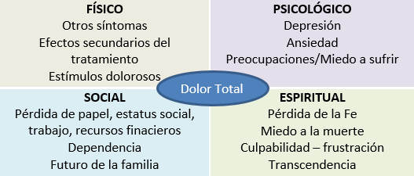

ICO 24h
MÓDULO 4 : Particularidades en la atención telefónica urgente del paciente onco-hematológico con necesidades paliativas
4.2 Dolor oncológico
4.2.1 Definición
El dolor se define según la “International Association for the Study of Pain” (IASP) como aquella experiencia sensorial y emocional desagradable asociada a un daño tisular real o potencial, o descrita en relación con este daño.
En Cuidados Paliativos se tiene en cuenta también el concepto de “dolor total” haciendo referencia al dolor oncológico en particular, donde es posible identificar aspectos físicos, sociofamiliares, emocionales y espirituales... que van a condicionar la percepción del dolor en el paciente con cáncer.
Es uno de los síntomas más frecuentes en el paciente oncológico, y comporta un gran impacto en su calidad de vida. El dolor puede llegar a ser uno de los síntomas guía en el debut de un cáncer, estando presente en un 20 % de los pacientes al diagnóstico oncológico, y llegar a aumentar su prevalencia siendo del 40% en estadios más evolucionados de la enfermedad, y casi en un 80% en fases avanzadas.
En la gran mayoría de ocasiones, la aparición de dolor suele estar relacionada con la progresión de la enfermedad, aunque no hay que obviar el dolor provocado por los tratamientos oncológicos (efectos secundarios de quimioterapias, de radioterapia...) y por enfermedades o procesos intercurrentes que puede presentar el paciente (ejemplo una neuralgia herpética, neuropatía diabética... etc).
4.2.2 Clasificación del dolor
El dolor puede clasificarse según el tiempo de evolución, según la calidad del dolor o mecanismo fisiopatológico, y según el curso de aparición a lo largo del día.
De esta manera, la clasificación del dolor oncológico es :
Según el tiempo de duración:
- Agudo
- Crónico: se define como “el dolor que se extiende más de 3 o 6 meses desde su aparición o que se extiende más allá del período de curación de una lesión tisular, o está asociado a una condición médica crónica”.
Según el mecanismo fisiopatológico:
- Nociceptivo, que a su vez se divide en:
- Somático: Se describe como un dolor bien localizado, pulsátil, punzante o “como de roer”. El dolor somático tiene su origen en los estímulos nociceptivos de estructuras somáticas como la piel, hueso, articulaciones, músculo y partes blandas.
- Visceral: el paciente en muchas ocasiones tiene dificultad para describirlo pues se describe como profundo, sordo, más bien difuso. El dolo visceral tiene su origen en los órganos o estructuras inervadas por el sistema simpático, como son mucosas, serosas, músculos lisos y vasos.
- Neuropático: tiene su origen en la afectación de estructuras nerviosas, provocando una percepción aberrante con alteraciones de la sensibilidad o motoras. El paciente suele describir este tipo de dolor, como hormigueo, descargas, lancinante, quemazón, acorchamiento.